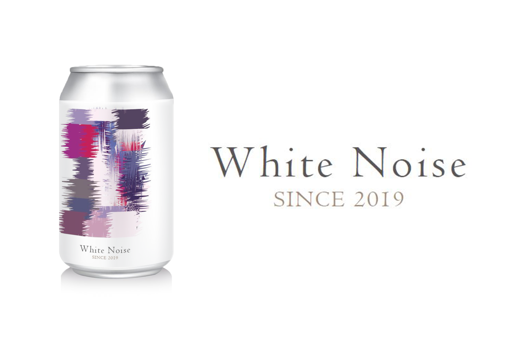
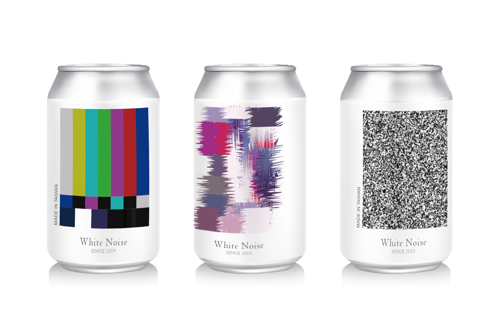

White Noise
易開罐啤酒包裝設計
在還需要接收器年代的電視，常會發現訊號不良時產生一些傳遞不完整的訊號。用這項概念來比擬喝酒之後人的大腦，無法完全清晰的接收別人給予的訊息，就好像電視訊號差的樣子，想讓人敲敲看，將這個概念放入包裝中，更顯趣味感。


錄影帶放映前
小時候在還會使用錄影帶的年代，坐在沙發上等待著放入讀取的期待心情，就算看著這個畫面心情也是快樂的。
利用錄影帶放映之前，未被讀取的狀態，來顯現酒後無法讀取外來訊息的樣子，也能用這三種包裝形式來詮釋不同酒精濃度的高低。

錄影帶放映前

訊號斷續

啊沒訊號啦